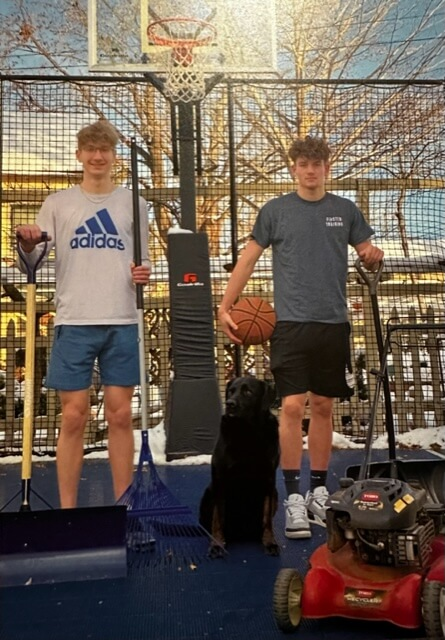

About Me
My name is Dillon Foster and I attend Highland Park Senior High in St. Paul, Minnesota. I made this website as a portfolio of my skills developing websites.
I have taken the following classes at Saint Paul College as a PSEO student:
- Intro to Business
- Sociology
- Intro to Watercolor
- HTML and Web Fundamentals
I will also be taking Business Management and Natural Disasters next semester.
My Hobbies
Sports
Basketball and lifting weights.
Video Games
PC and Xbox.
Food
Cooking and eating all different types.
My Business

My brother and I founded a lawn care and snow removal business in 2012. We are still going strong to this day and have grown our services and client base.
Our Services:
- Lawn Care
- Snow Removal
- Moving Furniture
- Tech Support
- Pet Sitting
- Basketball Training